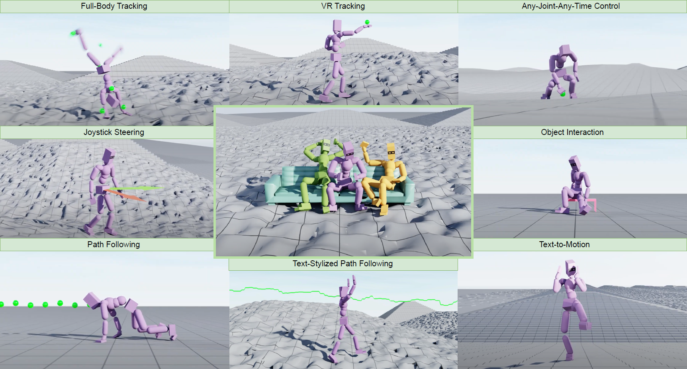

(1) NVIDIA(2) Bar-Ilan University (3) Simon Fraser University

Abstract
Crafting a single, versatile physics-based controller that can breathe life into
interactive characters across a wide spectrum of scenarios represents an exciting
frontier in character animation. An ideal controller should support diverse
control modalities, such as sparse target keyframes, text instructions, and scene
information. While previous works have proposed physically simulated, scene-aware
control models, these systems have predominantly focused on developing controllers
that each specializes in a narrow set of tasks and control modalities. This work
presents MaskedMimic, a novel approach that formulates physics-based character
control as a general motion inpainting problem. Our key insight is to train a
single unified model to synthesize motions from partial (masked) motion
descriptions, such as masked keyframes, objects, text descriptions, or any
combination thereof. This is achieved by leveraging motion tracking data and
designing a scalable training method that can effectively utilize diverse motion
descriptions to produce coherent animations. Through this process, our approach
learns a physics-based controller that provides an intuitive control interface
without requiring tedious reward engineering for all behaviors of interest. The
resulting controller supports a wide range of control modalities and enables
seamless transitions between disparate tasks. By unifying character control
through motion inpainting, MaskedMimic creates versatile virtual characters.
These characters can dynamically adapt to complex scenes and compose diverse
motions on demand, enabling more interactive and immersive experiences.
@article{tessler2024maskedmimic,
author = {Tessler, Chen and Guo, Yunrong and Nabati, Ofir and Chechik, Gal and Peng, Xue Bin},
title = {MaskedMimic: Unified Physics-Based Character Control Through Masked Motion Inpainting},
year = {2024},
journal={ACM Transactions on Graphics (TOG)},
publisher={ACM New York, NY, USA}
}